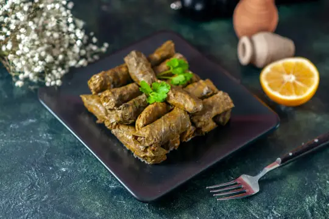

مطعم الشيف سـجـى
أبرز الأطباق لدينا

بركر بالجبن
من اجود انواع اللحوم العراقية مع جبن الـ...

سلطة الأوفوكادو
سلطة صحية أبرز مكوناتها الاوفوكاو والبعض مـ.....

مشاوي
تتكون المشاوي من صدر دجاج خالص مع الـ..
جــديــدنـا

دولمة عراقية
دولمة عراقية باللحم العراقي صنعت بيد ...

بكج البركر
من اجود انواع اللحوم العراقية مع الـ...

نودلز كوري
نودلز بالطريقة الكورية مع اشهى الـ...